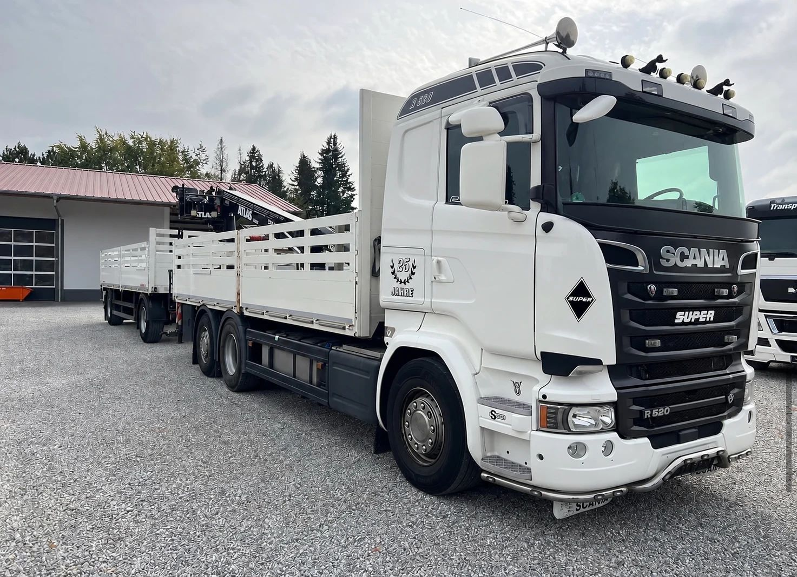

Wer in diesen Wochen einen LKW aus der Türkei erwartet oder einen in die Türkei schickt, braucht Geduld. Vor dem Grenzübergang Kapıkule auf türkischer und Kapitan Andreevo auf bulgarischer Seite standen Anfang November fast 3.900 LKW auf dem Warteplatz, auf den Zufahrten bildeten sich Schlangen von 20 bis 30 Kilometern. Fahrer berichten von drei bis fünf Tagen Wartezeit.
Hinter dem Stau steckt nicht eine Ursache, sondern drei, die gleichzeitig zusammenkommen. Hier ist der Überblick, Stand 4. November 2026. Die Lage ändert sich täglich.
Warum gerade dieser Grenzübergang?
Kapıkule und Kapitan Andreevo liegen bei Edirne und Swilengrad, dort, wo die bulgarische Autobahn Mariza endet. Für LKW zwischen der Türkei und Mitteleuropa ist das die kürzeste Landverbindung und der wichtigste Übergang. Auch viele Transporte in den Nahen Osten, den Kaukasus und nach Zentralasien nehmen diesen Weg. Schon im Normalbetrieb fertigt Kapitan Andreevo nach bulgarischen Angaben rund 2.400 LKW am Tag in beide Richtungen ab und ist damit voll ausgelastet (News.bg).
Ausweichen lässt sich nur begrenzt: Nördlich davon liegt der Übergang Hamzabeyli–Lesovo, Richtung Griechenland İpsala–Kipoi. Beide sind deutlich kleiner. Fällt in Kapitan Andreevo Kapazität weg, staut es sich dort innerhalb weniger Tage ebenfalls.
Grund 1: Der Umbau in Kapitan Andreevo
Seit Ende August 2026 baut Bulgarien den Übergang um. Am Ende soll er rund ein Viertel mehr schaffen, unter anderem mit vier neuen elektronischen Waagen an der Einfahrt und vier an der Ausfahrt (News.bg). Bis dahin sind einige LKW-Spuren gesperrt, und die Abfertigung schafft nach Berichten bulgarischer Medien etwa ein Drittel weniger (Mediamall). Schon Ende September reichte die Schlange auf der Autobahn rund 18 Kilometer weit, bis hinter Swilengrad.
Die Überdachungen der neuen Waagen sollen bis Ende 2026 fertig sein, das ganze Projekt bis Sommer 2027. Mit einer schnellen Entspannung ist also nicht zu rechnen.
Viele Fahrer wichen nach Hamzabeyli–Lesovo aus. Dort war die Schlange am 13. Oktober über 30 Kilometer lang (Radio Bulgarien). Am 18. Oktober meldete die Agentur Anadolu 27 Kilometer, ein Fahrer sprach von rund drei Tagen Wartezeit (AA).
Auch auf der türkischen Seite in Kapıkule wird gebaut. Nach Angaben des türkischen Transportverbands UND kamen dort zeitweise nur noch 250 bis 300 LKW am Tag hinaus. Für Kleintransporter wurde zur Entlastung der Übergang Dereköy geöffnet (Lojiport).

Grund 2: Die Schengen-Regel 90/180
Türkische Fahrer brauchen für die EU ein Schengen-Visum. Damit dürfen sie sich in jedem Zeitraum von 180 Tagen höchstens 90 Tage im Schengen-Raum aufhalten, ganz gleich, wie lange das Visum gültig ist. Das gilt auch für Berufskraftfahrer. Die Regel selbst ist alt, zwei Dinge sind neu:
- Bulgarien ist seit dem 1. Januar 2025 voll im Schengen-Raum, auch an den Landgrenzen. Seitdem zählt jeder Tag in Bulgarien und Rumänien mit. Vorher fuhren türkische Fahrer durch beide Länder, ohne Schengen-Tage zu verbrauchen.
- Seit dem 10. April 2026 läuft das Ein- und Ausreisesystem EES vollständig (Auswärtiges Amt). Statt Stempeln im Pass wird jede Ein- und Ausreise elektronisch erfasst. Wer seine 90 Tage verbraucht hat, fällt an der Grenze sofort auf.
Wer ständig zwischen der Türkei und Westeuropa pendelt, hat 90 Tage schnell zusammen. Fahrer berichten, dass Bulgarien LKW zurückweist, deren Fahrer keine Tage mehr übrig haben (Hürriyet Daily News). Dazu kommen monatelange Wartezeiten auf Visumtermine. Speditionen finden kaum noch Fahrer, die gültige Papiere und freie Tage zugleich haben (Yeni Bakış).
Bulgarien verweist darauf, dass die 90-Tage-Regel EU-Recht ist und sich national nicht ändern lässt. Sofia will die EU-Kommission um Flexibilität bitten (TR724). Die Kommission hatte schon im Januar 2026 angekündigt, längere Kurzaufenthalte für bestimmte Berufe zu prüfen, ausdrücklich auch für LKW-Fahrer (The Local). Beschlossen ist bisher nichts.
Grund 3: Die Proteste der Fahrer
Am 21. Oktober hielten türkische Fahrer in Edirne einen fünfstündigen Sitzstreik ab. Sie klagten über vier bis fünf Tage Wartezeit, knappe Visumtermine, fehlende Parkplätze und hohe Preise an der Grenze und forderten Sonderpässe für erfahrene Berufskraftfahrer (Hürriyet Daily News).
Am 28. Oktober telefonierte der bulgarische Verkehrsminister Georgi Peev mit seinem türkischen Kollegen Abdulkadir Uraloğlu. In den 24 Stunden davor hatten 1.304 LKW den Übergang passiert, 1.025 davon Richtung Türkei (Fakti.bg). Das ist gut die Hälfte dessen, was der Übergang im Normalbetrieb schafft. Vor dem türkischen Nationalfeiertag am 29. Oktober war zusätzlich mehr los.
Am 29. Oktober stellten Fahrer in Kapıkule, Hamzabeyli und İpsala die Motoren ab und blockierten zeitweise die Ausreise nach Bulgarien und Griechenland (Hürriyet Daily News). Laut türkischem Handelsministerium läuft die Abfertigung in Kapıkule seit dem Morgen desselben Tages wieder. Die Visumfrage ist damit aber nicht gelöst.
Wie ist die Lage jetzt?
Der Verband UND veröffentlicht täglich, wie viele LKW auf dem Warteplatz vor Kapıkule auf die Ausreise nach Bulgarien warten (UND):
- 1. November: 3.886 LKW
- 2. November: 3.320 LKW
- 3. November: 3.079 LKW
- 4. November: 3.012 LKW
Die Zahl sinkt, aber langsam. Solange in Kapitan Andreevo gebaut wird und die Frage der Aufenthaltstage offen ist, bleibt der Übergang ein Engpass. Türkische Wirtschaftsverbände warnen bereits, dass Zulieferteile für europäische Fabriken mit knapper Lagerhaltung zu spät kommen könnten (Yeni Bakış).
Was bedeutet das für Transporte zwischen Deutschland und der Türkei?
- Mehr Zeit einplanen. Mehrere Tage Puffer sind derzeit realistisch, in beide Richtungen.
- Vor der Abfahrt die Lage prüfen. Die Tageszahlen des UND zeigen, wie voll die Warteplätze sind, die bulgarische Grenzpolizei meldet starken Verkehr ebenfalls.
- Aufenthaltstage des Fahrers nachrechnen. Die EU-Kommission bietet dafür einen Rechner für Kurzaufenthalte an. Tage in Bulgarien und Rumänien zählen mit.
- Papiere vollständig mitgeben. Ausfuhranmeldung, Ausfuhrbegleitdokument und Versandpapiere müssen stimmen. Jeder Fehler kostet an der Grenze zusätzlich Stunden. Wie die Ausfuhr in ein Land außerhalb der EU abläuft, erklären wir unter Export in Drittländer.
- Kühltransporte absichern. Genug Diesel für das Kühlaggregat und eine Kühlkette, die mehrere Tage Stillstand verkraftet.
- Alternativen prüfen. Hamzabeyli–Lesovo ist derzeit kaum schneller. Wer fest planen muss, kann die Landgrenze mit Ro-Ro-Fähren zwischen Italien, etwa ab Triest, und der Türkei umgehen.
Nutzfahrzeuge verkaufen
Grenzen, Papiere und Wartezeiten gehören für uns zum Alltag: Die ECS Exclusive Commerce Services GmbH aus Gehrden bei Hannover kauft Nutzfahrzeuge an und exportiert sie. Sie möchten einen LKW, eine Sattelzugmaschine, einen Bus oder einen Transporter verkaufen? Sehen Sie unter Was wir ankaufen nach, nennen Sie uns Typ, Erstzulassung, Kilometerstand und Standort und schicken Sie ein paar Fotos. Wir machen Ihnen ein konkretes Angebot und holen das Fahrzeug deutschlandweit ab. Schreiben Sie uns oder rufen Sie an.
Hinweis: Dieser Beitrag dient der allgemeinen Information und ersetzt keine Rechts- oder Steuerberatung. Alle Angaben ohne Gewähr, Stand: 4. November 2026. Genannte Marken und Modellbezeichnungen gehören ihren jeweiligen Inhabern. Die ECS GmbH ist ein unabhängiger Händler und steht in keiner Verbindung zu den Herstellern.